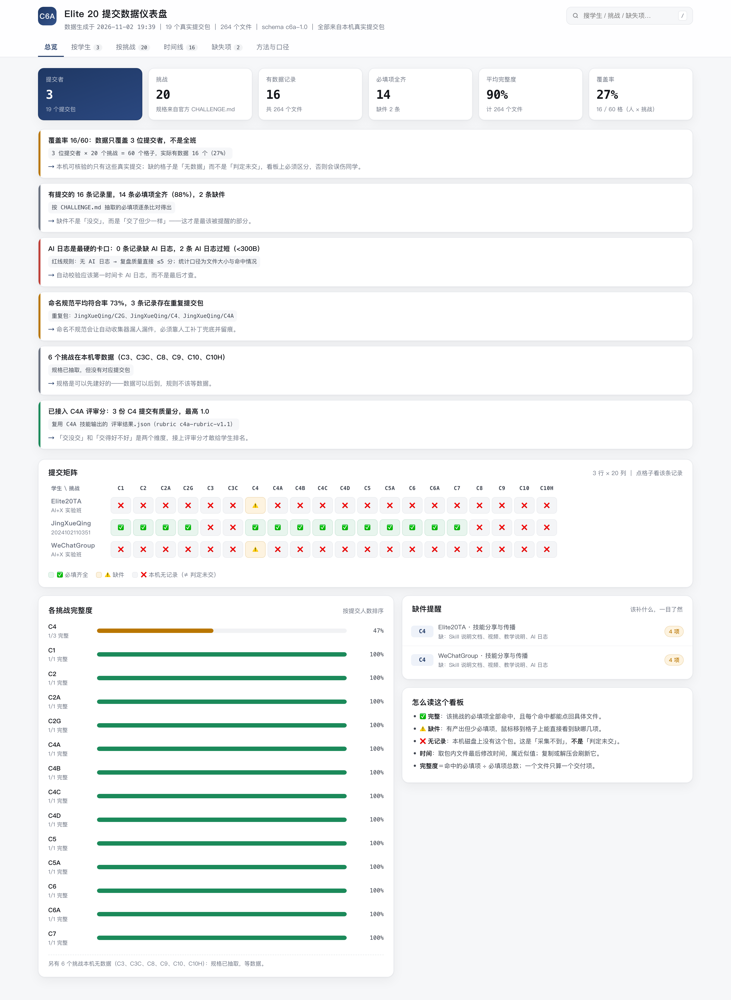
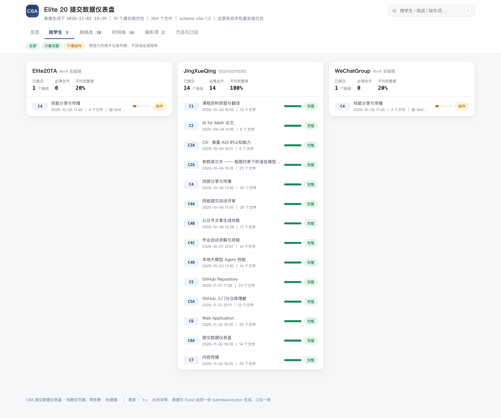
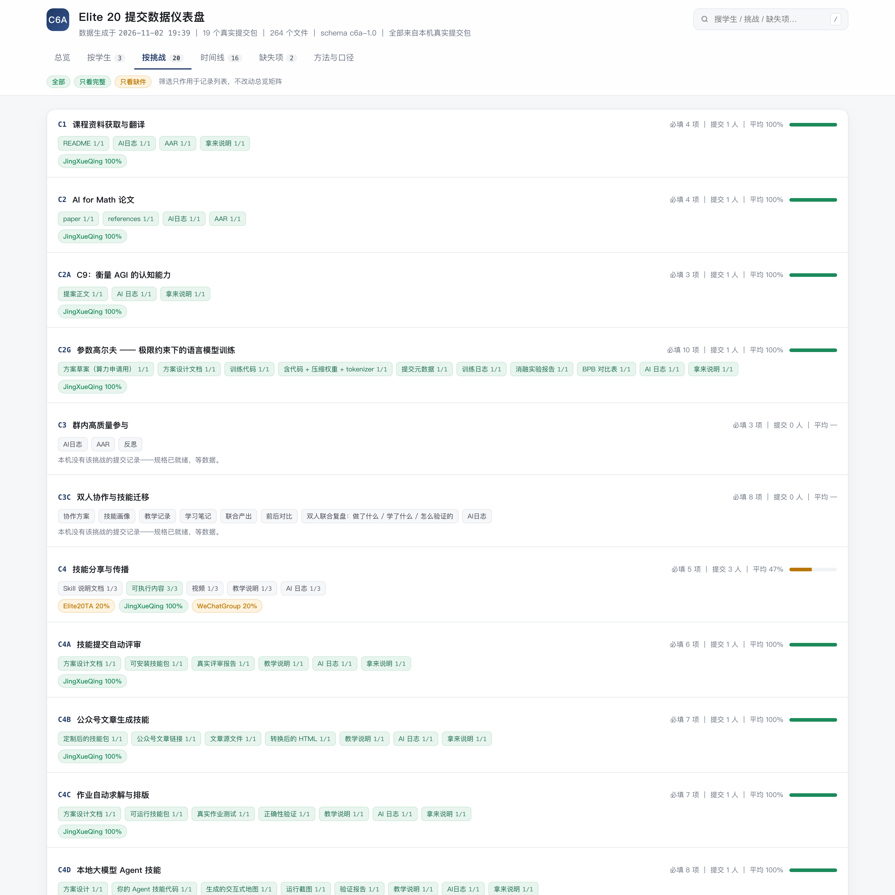
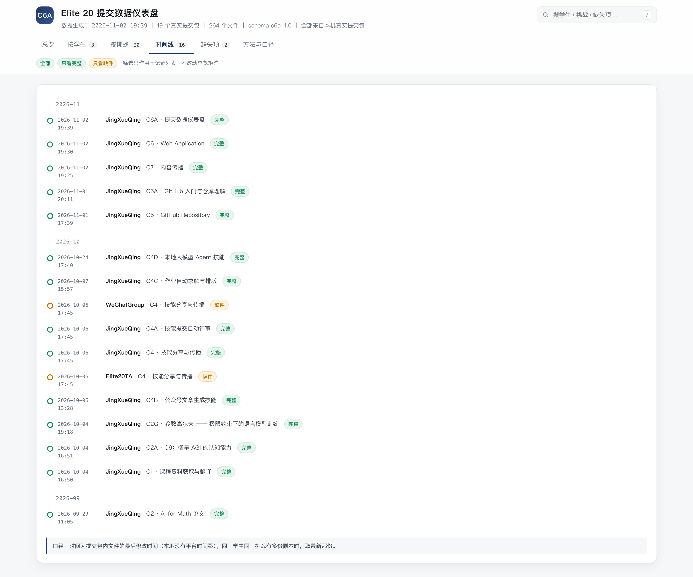
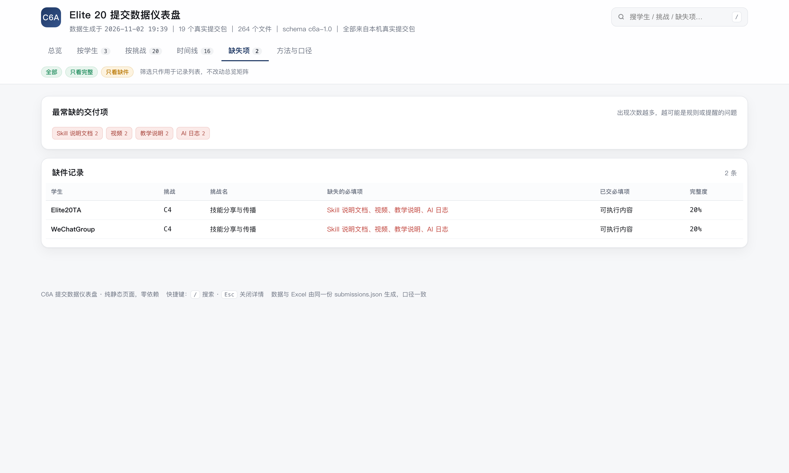
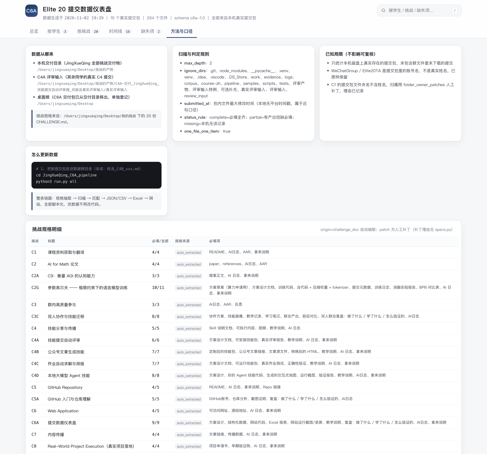
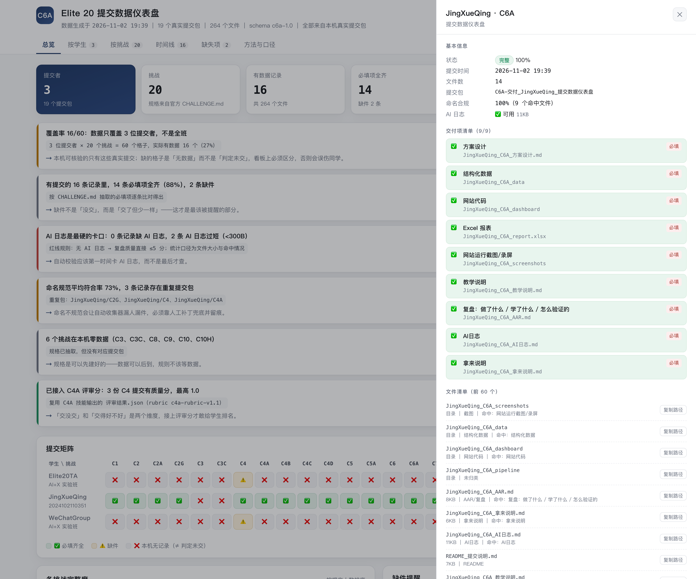

ch-20260717031528-w43gy7JingXueQing_C6A_仪表盘/index.html。

一眼看全：总包数、学生数、平均完整度，以及「谁在哪个挑战上缺东西」的热力图。

切到单个人：他交了哪几个挑战、每个包完整度多少、缺哪些必交项。

切到单个挑战：谁交了、谁没交、各自的完整度分布，方便判断整体进度。

按提交时间排序，看的是节奏：谁卡在截止前、哪几天集中交。

把所有「应该交但没交」的项拉成一张清单，可以直接照着催。

数据怎么来的、完整度怎么算的、哪些是推断、哪些是实测——口径写在页面里，不靠口头解释。

点任意格子下钻到单条记录：这个包里到底有哪些文件、命中/遗漏了哪几条必交项。